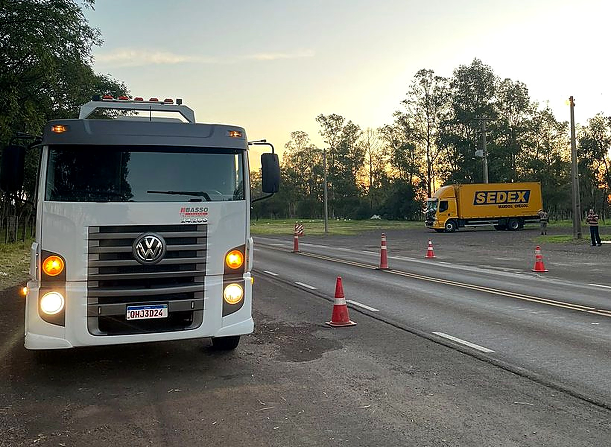

FUNDADOR
DESDE 2026
Selo no perfil + 3 meses vendo os pedidos da tua rota antes dos outros.
O GF abre para os guincheiros do RS. Ida com chamado. Volta com frete.
As que mais chegaram na caixinha.

O GF é gratuito para guincheiros e para quem precisa transportar um veículo.
O preço é seu e o acerto é direto com o cliente.
Não. Abra appdoguincheiro.com no celular e:
Começando pela Fronteira Oeste e região central do RS:
Alegrete · Uruguaiana · Rosário do Sul · São Gabriel · Santa Maria · Bagé e arredores
Ida com chamado. Volta com frete.
De onde sai, para onde volta, quando e com que equipamento.
Cada pedido mostra quantos km desvia. Você aceita só o que quiser.
O preço é seu. Combine direto com o cliente. Fundadores: o selo e a prioridade já estão valendo.